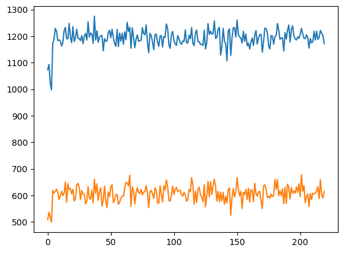
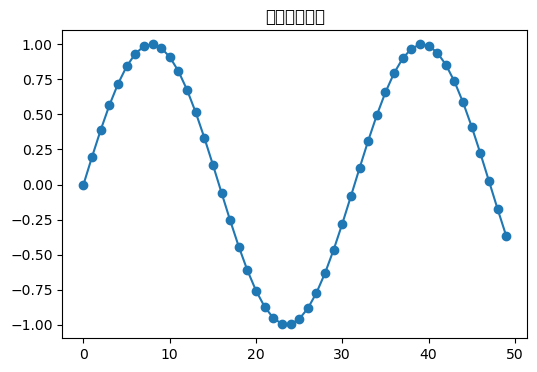
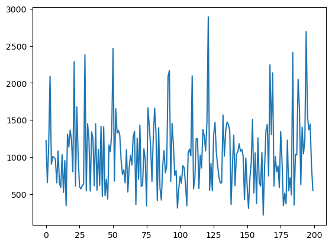
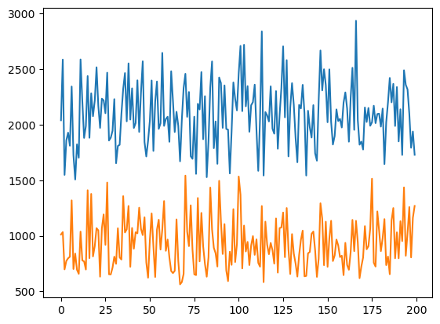

from selenium import webdriver
from selenium.webdriver.common.by import By
from fastcore.all import *
import numpy as np
import torchSolving 2048!
This project aims to achieve a high score in the game of 2048.
Goals: - Use selenium to open microsoft edge and control the webpage to play the game - Access the game info real-time - Run multiple processes in parallel to speed up data collection - Train the model
url = "http://home.ustc.edu.cn/~hejiyan/flxg/"
driver = webdriver.Edge()
driver.get(url)tile_container = driver.find_elements(By.CLASS_NAME, 'tile')
t = tile_container[0]level = int(t.get_attribute('class').split()[1].split('-')[-1])
level2position = t.get_attribute('class').split()[2].split('-')[2:]
row, col = int(position[1])-1, int(position[0])-1row, col(2, 0)grid = [[0 for i in range(4)] for j in range(4)]
grid[[0, 0, 0, 0], [0, 0, 0, 0], [0, 0, 0, 0], [0, 0, 0, 0]]for each in tile_container:
level = int(each.get_attribute('class').split()[1].split('-')[-1])
position = each.get_attribute('class').split()[2].split('-')[2:]
row, col = int(position[1])-1, int(position[0])-1
level = np.log2(level)
if grid[row][col] <= level:
grid[row][col] = levelgrid[[0, 0, 0, 0],
[0, 0, 0, 0],
[np.float64(1.0), 0, 0, np.float64(1.0)],
[0, 0, 0, 0]]gameover = len(driver.find_elements(By.CLASS_NAME, 'game-over')) != 0gameoverFalseDo the game play automation
from selenium.webdriver.common.keys import Keys
import random
import timekeys = [Keys.ARROW_DOWN, Keys.ARROW_LEFT, Keys.ARROW_UP, Keys.ARROW_RIGHT]container = driver.find_element(By.TAG_NAME, 'body')time.sleep(10)
while not len(driver.find_elements(By.CLASS_NAME, 'game-over')) != 0:
container.send_keys(random.choice(keys))score = int(driver.find_element(By.CLASS_NAME, 'score-container').text)
score704def gameplay(delay=10):
url = "http://home.ustc.edu.cn/~hejiyan/flxg/"
driver.get(url)
container = driver.find_element(By.TAG_NAME, 'body')
time.sleep(delay)
while not len(driver.find_elements(By.CLASS_NAME, 'game-over')) != 0:
container.send_keys(random.choice(keys))
score = driver.find_element(By.CLASS_NAME, 'score-container').text
if '\n' in score:
score = score.split('\n')[0]
score = int(score)
print("分数：",score)for i in range(10):
gameplay(0)分数： 568
分数： 728
分数： 1096
分数： 756
分数： 808
分数： 780
分数： 1056
分数： 1152
分数： 1008
分数： 2540Collect Gameplay Data
def init_grid():
return [[0.0 for i in range(4)] for j in range(4)]
def update_tiles():
grid = init_grid()
tc = driver.find_elements(By.CLASS_NAME, 'tile')
for each in tc:
cls = each.get_attribute('class')
level = int(cls.split()[1].split('-')[-1])
position = cls.split()[2].split('-')[2:]
row, col = int(position[1])-1, int(position[0])-1
level = float(np.log2(level))
if grid[row][col] <= level:
grid[row][col] = level
return grid.copy()
def is_game_over():
return len(driver.find_elements(By.CLASS_NAME, 'game-over')) != 0
def get_score():
score = driver.find_element(By.CLASS_NAME, 'score-container').text
if '\n' in score:
score = score.split('\n')[0]
score = int(score)
return score
def refresh(driver):
driver.get(url)def random_key():
return random.choice(keys)
def send_random_key():
key = random_key()
container = driver.find_element(By.TAG_NAME, 'body')
container.send_keys(key)
return keys.index(key)
def send_key(index):
container = driver.find_element(By.TAG_NAME, 'body')
container.send_keys(keys[index])refresh(driver)
states = []
actions = []
while not is_game_over():
states.append(update_tiles())
actions.append(send_random_key())
time.sleep(0.02)
print(get_score())1112len(states)151actions[-10:][0, 2, 0, 2, 3, 1, 0, 2, 2, 1]Implementing a neural network
model = nn.Sequential(
nn.Linear(16, 128),
nn.ReLU(),
nn.Linear(128, 108),
nn.ReLU(),
nn.Linear(108, 64),
nn.ReLU(),
nn.Linear(64, 32),
nn.ReLU(),
nn.Linear(32, 8),
nn.ReLU(),
nn.Linear(8, 4)
)def flatten(lst):
return torch.tensor(lst).view(1, 16)F.softmax(model(flatten(states[-1])), dim=1)tensor([[0.2226, 0.2244, 0.2841, 0.2688]], grad_fn=<SoftmaxBackward0>)scores = []
all_states = []
all_actions = []
for i in range(10):
refresh(driver)
states = []
actions = []
while not is_game_over():
states.append(update_tiles())
actions.append(send_random_key())
time.sleep(0.02)
scores.append(get_score())
all_states.append(states)
all_actions.append(actions)scores[1424, 636, 488, 1868, 732, 1012, 1336, 1400, 1164, 696]X = []
y = []
targ = np.percentile(scores, 50)for i in range(10):
if scores[i] > targ:
X.extend(all_states[i])
y.extend(all_actions[i])X_train = torch.tensor(X).view(-1, 16)
X_train, X_train.shape(tensor([[0., 0., 1., ..., 1., 0., 0.],
[0., 0., 1., ..., 0., 0., 1.],
[0., 0., 0., ..., 0., 1., 2.],
...,
[1., 2., 3., ..., 7., 1., 2.],
[1., 2., 1., ..., 7., 1., 2.],
[2., 1., 2., ..., 7., 1., 2.]]),
torch.Size([914, 16]))y_train = torch.tensor(y).view(-1, 1)
y_train[:10], y_train.shape(tensor([[3],
[0],
[2],
[3],
[2],
[1],
[1],
[3],
[2],
[1]]),
torch.Size([914, 1]))optimizer = optim.Adam(model.parameters(), lr=0.01)
def nll_loss(pred, goal):
return torch.mean((pred-goal)**2)loss = torch.mean(-torch.log(F.softmax(model(X_train), dim=1).gather(1, y_train)[:5]))
loss.backward()model(X_train)tensor([[-0.2140, 0.1534, 0.0546, 0.0998],
[-0.2061, 0.1558, 0.0597, 0.1094],
[-0.2398, 0.1856, 0.0360, 0.0989],
...,
[-0.1910, -0.0025, 0.0620, 0.0805],
[-0.2252, 0.0265, 0.0468, 0.0666],
[-0.2122, 0.0110, 0.0648, 0.0661]], grad_fn=<AddmmBackward0>)optimizer.step()from torch.distributions import Categoricalprobs = F.softmax(model(flatten(states[-1])), dim=1)
m = Categorical(probs)
m.sample()tensor([2])probstensor([[0.2062, 0.2503, 0.2737, 0.2699]], grad_fn=<SoftmaxBackward0>)Implement one complete training loop
goats = []
scores = []
all_states = []
all_actions = []
for i in range(10):
refresh(driver)
states = []
actions = []
data = []
while not is_game_over():
states.append(flatten(update_tiles()))
probs = F.softmax(model(states[-1]), dim=1)
m = Categorical(probs)
action = m.sample()
send_key(action)
actions.append(action)
data.append(states[-1], action)
time.sleep(0.03)
scores.append(get_score())
if len(goats) < 5:
goats.append((states, actions, scores[-1]))
else:
goats.sort(key=lambda x: x[-1])
if goats[0][-1] < scores[-1]:
goats[0] = (states, actions, scores[-1])
all_states.append(states)
all_actions.append(actions)--------------------------------------------------------------------------- TypeError Traceback (most recent call last) Cell In[243], line 24 22 def key_func(a, b): 23 return a[-1] < b[-1] ---> 24 goats.sort(key=key_func) 25 if goats[0][-1] < scores[-1]: 26 goats[0] = (states, actions, scores[-1]) TypeError: key_func() missing 1 required positional argument: 'b'
torch.tensor(scores, dtype=float).mean()tensor(802., dtype=torch.float64)X = []
y = []
for i in range(10):
if scores[i] > targ:
X.extend(all_states[i])
y.extend(all_actions[i])
X_train = torch.tensor(X).view(-1, 16)
y_train = torch.tensor(y).view(-1, 1)
for i in range(5):
loss = torch.mean(-torch.log(F.softmax(model(X_train), dim=1).gather(1, y_train)[:5]))
loss.backward()
optimizer.step()import timegoats = []Train for several hours with logging!
t0 = time.time()
for k in range(30):
# 30 epochs, with 10 games per epoch
print(f"\n{k}th epoch. ")
t1 = time.time()
scores = []
all_states = []
all_actions = []
for j in range(10):
refresh(driver)
states = []
actions = []
while not is_game_over():
states.append(update_tiles())
probs = F.softmax(model(flatten(states[-1])), dim=1)
m = Categorical(probs)
action = m.sample()
send_key(action)
actions.append(action)
time.sleep(0.03)
scores.append(get_score())
print(f"Completed {j}th game. Score: {scores[-1]}.")
if len(goats) <= 10:
goats.append((states, actions, scores[-1]))
else:
goats.sort(key=lambda x: x[-1])
if goats[0][-1] < scores[-1]:
goats[0] = (states, actions, scores[-1])
all_states.append(states)
all_actions.append(actions)
print("Average score: ", torch.tensor(scores, dtype=float).mean())
print("GOAT score that is going to be learnt: ", [i[-1] for i in goats])
X = []
y = []
for i in range(10):
X.extend(goats[i][0])
y.extend(goats[i][1])
X_train = torch.tensor(X).view(-1, 16)
y_train = torch.tensor(y).view(-1, 1)
for i in range(5):
loss = torch.mean(-torch.log(F.softmax(model(X_train), dim=1).gather(1, y_train)[:5]))
loss.backward()
optimizer.step()
t2 = time.time()
print("Epoch complete. Time elapsed: ", t2-t1, "s. Total: ", t2-t0, "s.")
0th epoch.
Completed 0th game. Score: 1428.
Completed 1th game. Score: 840.
Completed 2th game. Score: 1416.
Completed 3th game. Score: 1124.
Completed 4th game. Score: 900.
Completed 5th game. Score: 880.
Completed 6th game. Score: 1116.
Completed 7th game. Score: 956.
Completed 8th game. Score: 872.
Completed 9th game. Score: 560.
Average score: tensor(1009.2000, dtype=torch.float64)
GOAT score that is going to be learnt: [2368, 2372, 2380, 2380, 2384, 2392, 2416, 2428, 2824, 2952, 3068]
Epoch complete. Time elapsed: 88.53088998794556 s. Total: 88.53138303756714 s.
1th epoch. --------------------------------------------------------------------------- KeyboardInterrupt Traceback (most recent call last) Cell In[271], line 20 18 send_key(action) 19 actions.append(action) ---> 20 time.sleep(0.03) 21 scores.append(get_score()) 22 print(f"Completed {j}th game. Score: {scores[-1]}.") KeyboardInterrupt:
model(flatten(states[176]))tensor([[ 2.3761, -1.9841, 1.9022, -4.5854]], grad_fn=<AddmmBackward0>)refresh(driver)
states = []
actions = []
while not is_game_over():
states.append(update_tiles())
probs = F.softmax(model(flatten(states[-1])), dim=1)
m = Categorical(probs)
action = m.sample()
send_key(action)
actions.append(action)
time.sleep(1)
print(get_score())Localize
a = np.array([[1],[ 2], [3]])
b = a.copy()b[0][0]=3a==barray([[False],
[ True],
[ True]])import numpy as np
import random
class Game2048:
def __init__(self):
self.size = 4
self.score = 0
self.board = np.zeros((self.size, self.size), dtype=int)
self.add_new_tile()
self.add_new_tile()
self.nomove = False
def add_new_tile(self):
empty_tiles = list(zip(*np.where(self.board == 0)))
if empty_tiles:
x, y = random.choice(empty_tiles)
self.board[x][y] = 2 if random.random() < 0.9 else 4
def move(self, direction):
self.nomove = False
prev_board = self.board.copy()
if direction == 'down':
self.board = np.rot90(self.board, -1)
self._move_left()
self.board = np.rot90(self.board)
elif direction == 'up':
self.board = np.rot90(self.board, 1)
self._move_left()
self.board = np.rot90(self.board, -1)
elif direction == 'left':
self._move_left()
elif direction == 'right':
self.board = np.fliplr(self.board)
self._move_left()
self.board = np.fliplr(self.board)
self.nomove = np.abs(self.board - prev_board).sum()==0
if self.nomove: return
self.add_new_tile()
def _move_left(self):
self.reward = 0
new_board = np.zeros((self.size, self.size), dtype=int)
for i in range(self.size):
row = self.board[i][self.board[i] != 0]
new_row = []
skip = False
for j in range(len(row)):
if skip:
skip = False
continue
if j + 1 < len(row) and row[j] == row[j + 1]:
new_row.append(row[j] * 2)
self.score += row[j]*2
self.reward += row[j]*2
skip = True
else:
new_row.append(row[j])
new_board[i, :len(new_row)] = new_row
self.board[:] = new_board
return reward
def is_game_over(self):
if not np.any(self.board == 0):
for i in range(self.size):
for j in range(self.size - 1):
if self.board[i][j] == self.board[i][j + 1] or \
self.board[j][i] == self.board[j + 1][i]:
return False
return True
return False
game = Game2048()
print(game.board)[[0 0 0 0]
[0 0 0 0]
[0 0 0 0]
[0 2 2 0]]game.move('down')
game.boardarray([[0, 0, 0, 0],
[0, 0, 0, 0],
[0, 0, 0, 0],
[0, 0, 4, 4]])game.boardarray([[0, 0, 4, 2],
[0, 0, 0, 0],
[0, 0, 0, 0],
[0, 0, 0, 0]])model = nn.Sequential(
nn.Linear(16, 128),
nn.ReLU(),
nn.Linear(128, 108),
nn.ReLU(),
nn.Linear(108, 64),
nn.ReLU(),
nn.Linear(64, 32),
nn.ReLU(),
nn.Linear(32, 8),
nn.ReLU(),
nn.Linear(8, 4)
)states[-1]array([[0, 0, 0, 4],
[0, 0, 0, 2],
[0, 0, 0, 0],
[0, 0, 0, 0]])game.is_game_over()Falseplt.ion()
goats = []
model = nn.Sequential(
nn.Linear(16, 128),
nn.ReLU(),
nn.Linear(128, 108),
nn.ReLU(),
nn.Linear(108, 84),
nn.ReLU(),
nn.Linear(84, 64),
nn.ReLU(),
nn.Linear(64, 32),
nn.ReLU(),
nn.Linear(32, 8),
nn.ReLU(),
nn.Linear(8, 4)
)
optimizer = optim.Adam(model.parameters(), lr=0.01)
t0 = time.time()
epoch_num = []
epoch_score = []
epoch_var = []
for k in range(3000):
# 30 epochs, with 10 games per epoch
print(f"{k}th epoch. ")
t1 = time.time()
scores = []
all_states = []
all_actions = []
for j in range(500):
game = Game2048()
states = []
actions = []
while not game.is_game_over():
states.append(game.board.copy())
probs = F.softmax(model(flatten(states[-1]).float()), dim=1)
m = Categorical(probs)
action = m.sample()
action_str = ['down', 'left', 'up', 'right'][action]
game.move(action_str)
if game.nomove:
action_str = random.choice(['down', 'left', 'up', 'right'])
game.move(action_str)
actions.append(action)
scores.append(game.score)
all_states.append(states)
all_actions.append(actions)
elite = np.percentile(scores, 80)
avg = float(torch.tensor(scores, dtype=float).mean())
var = float(torch.tensor(scores, dtype=float).std())
print("Average score: ", avg)
epoch_num.append(k)
epoch_score.append(avg)
epoch_var.append(var)
clear_output(wait=True)
plt.plot(epoch_num, epoch_score)
plt.plot(epoch_num, epoch_var)
plt.show()
X = []
y = []
for i in range(100):
if scores[i] > elite:
X.extend(states)
y.extend(actions)
X_train = torch.tensor(X).view(-1, 16)
y_train = torch.tensor(y).view(-1, 1)
loss = torch.mean(-torch.log(F.softmax(model(X_train.float()), dim=1).gather(1, y_train)[:5]))
loss.backward()
optimizer.step()
t2 = time.time()
220th epoch. --------------------------------------------------------------------------- KeyboardInterrupt Traceback (most recent call last) Cell In[405], line 37 35 states.append(game.board.copy()) 36 probs = F.softmax(model(flatten(states[-1]).float()), dim=1) ---> 37 m = Categorical(probs) 38 action = m.sample() 39 action_str = ['down', 'left', 'up', 'right'][action] File /opt/anaconda3/envs/deep/lib/python3.10/site-packages/torch/distributions/categorical.py:72, in Categorical.__init__(self, probs, logits, validate_args) 68 self._num_events = self._param.size()[-1] 69 batch_shape = ( 70 self._param.size()[:-1] if self._param.ndimension() > 1 else torch.Size() 71 ) ---> 72 super().__init__(batch_shape, validate_args=validate_args) File /opt/anaconda3/envs/deep/lib/python3.10/site-packages/torch/distributions/distribution.py:69, in Distribution.__init__(self, batch_shape, event_shape, validate_args) 67 continue # skip checking lazily-constructed args 68 value = getattr(self, param) ---> 69 valid = constraint.check(value) 70 if not valid.all(): 71 raise ValueError( 72 f"Expected parameter {param} " 73 f"({type(value).__name__} of shape {tuple(value.shape)}) " (...) 76 f"but found invalid values:\n{value}" 77 ) KeyboardInterrupt:
np.percentile([2, 3, 5, 6, 7, 8], 70)np.float64(6.5)import matplotlib.pyplot as plt
import numpy as np
import time
from IPython.display import clear_output
x, y = [], []
plt.ion() # 打开交互模式
for i in range(50):
print(i)
x.append(i)
y.append(np.sin(i/5))
clear_output(wait=True)
plt.figure(figsize=(6,4))
plt.plot(x, y, marker='o')
plt.title("动态绘图示例")
plt.show()
X_traintensor([[ 0, 0, 2, ..., 0, 0, 0],
[ 4, 0, 0, ..., 2, 0, 0],
[ 0, 0, 0, ..., 2, 0, 0],
...,
[ 4, 2, 4, ..., 8, 64, 2],
[ 4, 2, 4, ..., 8, 64, 2],
[ 4, 2, 4, ..., 8, 64, 2]])Policy Gradient
It seems that using the cross entropy method doesn’t train well.
I need to rewrite the data collection part.
model(flatten(states[1])) # 下左上右tensor([[ 0.2096, -0.5115, 0.1361, -0.7855]], grad_fn=<AddmmBackward0>)model = nn.Sequential(
nn.Linear(16, 128),
nn.ReLU(),
nn.Linear(128, 64),
nn.ReLU(),
nn.Linear(64, 32),
nn.ReLU(),
nn.Linear(32, 8),
nn.ReLU(),
nn.Linear(8, 4)
)game = Game2048()
experiences = []
while not game.is_game_over():
game_prev = flatten(game.board.copy()).float().log1p()
#import pdb;pdb.set_trace()
probs = F.softmax(model(game_prev), dim=1)
m = Categorical(probs)
action = m.sample()
action_str = ['down', 'left', 'up', 'right'][action]
game.move(action_str)
reward = game.reward
game_after = flatten(game.board.copy()).float().log1p()
experiences.append((game_prev, action, m.log_prob(action), reward, game_after))real_rewards = []
cumu = 0
discount = 0.99
for i in experiences[::-1]:
cumu += i[3]*discount
real_rewards.insert(0, cumu)experiences[0][2]tensor([-1.3613], grad_fn=<SqueezeBackward1>)losses = []
for i in range(len(experiences)):
losses.append(-experiences[i][2]*real_rewards[i])loss = torch.stack(losses).sum()
loss.backward()Putting it all together:
optimizer = optim.Adam(model.parameters(), lr=0.001)
scores = []
max_repeat = 0
for l in range(2000):
game = Game2048()
experiences = []
repeat = 0
while not game.is_game_over():
repeat += 1
max_repeat = max([repeat, max_repeat])
game_prev = flatten(game.board.copy()).float().log1p()
probs = F.softmax(model(game_prev), dim=1)
m = Categorical(probs)
"""
if repeat >= 2:
action = random.choice([0,1,2,3])
prob = torch.log(torch.tensor([0.25]))
else:
"""
action = m.sample()
prob = m.log_prob(action)
action_str = ['down', 'left', 'up', 'right'][action]
game.move(action_str)
#pdb.set_trace()
reward = game.reward
if game.nomove:
reward = -1000
game_after = flatten(game.board.copy()).float().log1p()
experiences.append((game_prev, action, prob, reward, game_after))
scores.append(game.score)
real_rewards = []
cumu = 0
discount = 1.01
for i in experiences[::-1]:
cumu += i[3]*discount
real_rewards.insert(0, cumu)
real_rewards = [r * 0.01 for r in real_rewards]
losses = []
for i in range(len(experiences)):
losses.append(-experiences[i][2]*real_rewards[i])
loss = torch.stack(losses).sum()
loss.backward()
optimizer.step()
clear_output(wait=True)
if len(scores) > 200:
scores = scores[-200:]
plt.plot(scores)
plt.show()
--------------------------------------------------------------------------- KeyboardInterrupt Traceback (most recent call last) Cell In[507], line 12 10 max_repeat = max([repeat, max_repeat]) 11 game_prev = flatten(game.board.copy()).float().log1p() ---> 12 probs = F.softmax(model(game_prev), dim=1) 13 m = Categorical(probs) 14 """ 15 if repeat >= 2: 16 action = random.choice([0,1,2,3]) 17 prob = torch.log(torch.tensor([0.25])) 18 else: 19 """ File /opt/anaconda3/envs/deep/lib/python3.10/site-packages/torch/nn/modules/module.py:1736, in Module._wrapped_call_impl(self, *args, **kwargs) 1734 return self._compiled_call_impl(*args, **kwargs) # type: ignore[misc] 1735 else: -> 1736 return self._call_impl(*args, **kwargs) File /opt/anaconda3/envs/deep/lib/python3.10/site-packages/torch/nn/modules/module.py:1747, in Module._call_impl(self, *args, **kwargs) 1742 # If we don't have any hooks, we want to skip the rest of the logic in 1743 # this function, and just call forward. 1744 if not (self._backward_hooks or self._backward_pre_hooks or self._forward_hooks or self._forward_pre_hooks 1745 or _global_backward_pre_hooks or _global_backward_hooks 1746 or _global_forward_hooks or _global_forward_pre_hooks): -> 1747 return forward_call(*args, **kwargs) 1749 result = None 1750 called_always_called_hooks = set() File /opt/anaconda3/envs/deep/lib/python3.10/site-packages/torch/nn/modules/container.py:250, in Sequential.forward(self, input) 248 def forward(self, input): 249 for module in self: --> 250 input = module(input) 251 return input File /opt/anaconda3/envs/deep/lib/python3.10/site-packages/torch/nn/modules/module.py:1736, in Module._wrapped_call_impl(self, *args, **kwargs) 1734 return self._compiled_call_impl(*args, **kwargs) # type: ignore[misc] 1735 else: -> 1736 return self._call_impl(*args, **kwargs) File /opt/anaconda3/envs/deep/lib/python3.10/site-packages/torch/nn/modules/module.py:1747, in Module._call_impl(self, *args, **kwargs) 1742 # If we don't have any hooks, we want to skip the rest of the logic in 1743 # this function, and just call forward. 1744 if not (self._backward_hooks or self._backward_pre_hooks or self._forward_hooks or self._forward_pre_hooks 1745 or _global_backward_pre_hooks or _global_backward_hooks 1746 or _global_forward_hooks or _global_forward_pre_hooks): -> 1747 return forward_call(*args, **kwargs) 1749 result = None 1750 called_always_called_hooks = set() File /opt/anaconda3/envs/deep/lib/python3.10/site-packages/torch/nn/modules/activation.py:133, in ReLU.forward(self, input) 132 def forward(self, input: Tensor) -> Tensor: --> 133 return F.relu(input, inplace=self.inplace) File /opt/anaconda3/envs/deep/lib/python3.10/site-packages/torch/nn/functional.py:1704, in relu(input, inplace) 1702 result = torch.relu_(input) 1703 else: -> 1704 result = torch.relu(input) 1705 return result KeyboardInterrupt:
scores = 0
for i in range(50):
game = Game2048()
while not game.is_game_over():
game_prev = flatten(game.board.copy()).float()
probs = F.softmax(model(game_prev), dim=1)
m = Categorical(probs)
action = m.sample()
action_str = ['down', 'left', 'up', 'right'][action]
game.move(action_str)
reward = game.reward
game_after = game.board.copy()
scores += game.score
print(scores/50)--------------------------------------------------------------------------- KeyboardInterrupt Traceback (most recent call last) Cell In[491], line 7 5 game_prev = flatten(game.board.copy()).float() 6 probs = F.softmax(model(game_prev), dim=1) ----> 7 m = Categorical(probs) 8 action = m.sample() 9 action_str = ['down', 'left', 'up', 'right'][action] File /opt/anaconda3/envs/deep/lib/python3.10/site-packages/torch/distributions/categorical.py:72, in Categorical.__init__(self, probs, logits, validate_args) 68 self._num_events = self._param.size()[-1] 69 batch_shape = ( 70 self._param.size()[:-1] if self._param.ndimension() > 1 else torch.Size() 71 ) ---> 72 super().__init__(batch_shape, validate_args=validate_args) File /opt/anaconda3/envs/deep/lib/python3.10/site-packages/torch/distributions/distribution.py:70, in Distribution.__init__(self, batch_shape, event_shape, validate_args) 68 value = getattr(self, param) 69 valid = constraint.check(value) ---> 70 if not valid.all(): 71 raise ValueError( 72 f"Expected parameter {param} " 73 f"({type(value).__name__} of shape {tuple(value.shape)}) " (...) 76 f"but found invalid values:\n{value}" 77 ) 78 super().__init__() KeyboardInterrupt:
class CNN2048(nn.Module):
def __init__(self):
super().__init__()
self.conv1 = nn.Conv2d(1, 32, 3, padding=1) # 4x4x1 -> 4x4x32
self.conv2 = nn.Conv2d(32, 64, 3, padding=1) # 4x4x32 -> 4x4x64
self.fc = nn.Linear(64*4*4, 4) # Flatten to 4 actions
def forward(self, x):
x = x.view(-1, 1, 4, 4) # Reshape to 4x4 grid
x = F.relu(self.conv1(x))
x = F.relu(self.conv2(x))
x = x.view(x.size(0), -1) # Flatten
return self.fc(x)model = CNN2048()Deep Q Networks
class FullyConnectedQNetwork(nn.Module):
def __init__(self, nin=80, nout=4):
super().__init__()
self.model = nn.Sequential(
nn.Linear(nin, 192),
nn.ReLU(),
nn.Linear(192, 128),
nn.ReLU(),
nn.Linear(128, 64),
nn.ReLU(),
nn.Linear(64, 64),
nn.ReLU(),
nn.Linear(64, nout)
)
def forward(self, x):
return self.model(x)
def mse_loss(pred, goal):
return torch.mean((pred-goal)**2)model = FullyConnectedQNetwork()
optimizer = optim.Adam(model.parameters(), lr=0.001)def get_state(game):
states = []
for move in ['down', 'left', 'up', 'right']:
new_game = Game2048()
new_game.board = game.board.copy()
new_game.move(move)
states.append(flatten(new_game.board.copy()).float().log1p())
state = flatten(game.board.copy()).float().log1p()
states = [state] + states
new_state = torch.cat(states, dim=1)
return new_statetotal_reward = 0
done = False
game = Game2048()
gamma = 0.99
experience_pool = []
while not game.is_game_over():
state = get_state(game)
if np.random.rand() > 0.2:
action = int(model(state).argmax())
else:
action = random.randint(0, 3)
game.move(['down', 'left', 'up', 'right'][action])
next_state = get_state(game)
if game.nomove:
reward = -100
else:
reward = game.reward
with torch.no_grad():
target = reward + gamma*model(next_state).max()*(not game.is_game_over())
experience_pool.append((state, action, target))--------------------------------------------------------------------------- RuntimeError Traceback (most recent call last) Cell In[588], line 10 8 state = get_state(game) 9 if np.random.rand() > 0.2: ---> 10 action = int(model(state).argmax()) 11 else: 12 action = random.randint(0, 3) File /opt/anaconda3/envs/deep/lib/python3.10/site-packages/torch/nn/modules/module.py:1736, in Module._wrapped_call_impl(self, *args, **kwargs) 1734 return self._compiled_call_impl(*args, **kwargs) # type: ignore[misc] 1735 else: -> 1736 return self._call_impl(*args, **kwargs) File /opt/anaconda3/envs/deep/lib/python3.10/site-packages/torch/nn/modules/module.py:1747, in Module._call_impl(self, *args, **kwargs) 1742 # If we don't have any hooks, we want to skip the rest of the logic in 1743 # this function, and just call forward. 1744 if not (self._backward_hooks or self._backward_pre_hooks or self._forward_hooks or self._forward_pre_hooks 1745 or _global_backward_pre_hooks or _global_backward_hooks 1746 or _global_forward_hooks or _global_forward_pre_hooks): -> 1747 return forward_call(*args, **kwargs) 1749 result = None 1750 called_always_called_hooks = set() Cell In[578], line 16, in FullyConnectedQNetwork.forward(self, x) 15 def forward(self, x): ---> 16 return self.model(x) File /opt/anaconda3/envs/deep/lib/python3.10/site-packages/torch/nn/modules/module.py:1736, in Module._wrapped_call_impl(self, *args, **kwargs) 1734 return self._compiled_call_impl(*args, **kwargs) # type: ignore[misc] 1735 else: -> 1736 return self._call_impl(*args, **kwargs) File /opt/anaconda3/envs/deep/lib/python3.10/site-packages/torch/nn/modules/module.py:1747, in Module._call_impl(self, *args, **kwargs) 1742 # If we don't have any hooks, we want to skip the rest of the logic in 1743 # this function, and just call forward. 1744 if not (self._backward_hooks or self._backward_pre_hooks or self._forward_hooks or self._forward_pre_hooks 1745 or _global_backward_pre_hooks or _global_backward_hooks 1746 or _global_forward_hooks or _global_forward_pre_hooks): -> 1747 return forward_call(*args, **kwargs) 1749 result = None 1750 called_always_called_hooks = set() File /opt/anaconda3/envs/deep/lib/python3.10/site-packages/torch/nn/modules/container.py:250, in Sequential.forward(self, input) 248 def forward(self, input): 249 for module in self: --> 250 input = module(input) 251 return input File /opt/anaconda3/envs/deep/lib/python3.10/site-packages/torch/nn/modules/module.py:1736, in Module._wrapped_call_impl(self, *args, **kwargs) 1734 return self._compiled_call_impl(*args, **kwargs) # type: ignore[misc] 1735 else: -> 1736 return self._call_impl(*args, **kwargs) File /opt/anaconda3/envs/deep/lib/python3.10/site-packages/torch/nn/modules/module.py:1747, in Module._call_impl(self, *args, **kwargs) 1742 # If we don't have any hooks, we want to skip the rest of the logic in 1743 # this function, and just call forward. 1744 if not (self._backward_hooks or self._backward_pre_hooks or self._forward_hooks or self._forward_pre_hooks 1745 or _global_backward_pre_hooks or _global_backward_hooks 1746 or _global_forward_hooks or _global_forward_pre_hooks): -> 1747 return forward_call(*args, **kwargs) 1749 result = None 1750 called_always_called_hooks = set() File /opt/anaconda3/envs/deep/lib/python3.10/site-packages/torch/nn/modules/linear.py:125, in Linear.forward(self, input) 124 def forward(self, input: Tensor) -> Tensor: --> 125 return F.linear(input, self.weight, self.bias) RuntimeError: mat1 and mat2 shapes cannot be multiplied (1x80 and 272x324)
random.shuffle(experience_pool)
batch_size = 32
for k in range(0, len(experience_pool), batch_size):
states, actions, targets = zip(*experience_pool[k:k+batch_size])
X = torch.stack(states)
y = torch.stack(targets)
q_values = model(X).squeeze()
#pdb.set_trace()
chosen_q_values = q_values.gather(1, torch.tensor(actions).unsqueeze(1))
loss = mse_loss(chosen_q_values.squeeze(), y)
optimizer.zero_grad()
loss.backward()
optimizer.step()
def get_state(game):
states = []
for move in ['down', 'left', 'up', 'right']:
new_game = Game2048()
new_game.board = game.board.copy()
new_game.move(move)
states.append(flatten(new_game.board.copy()).float().log1p())
for move in ['down', 'left', 'up', 'right']:
new_game = Game2048()
new_game.board = game.board.copy()
new_game.move(move)
states.append(flatten(new_game.board.copy()).float().log1p())
state = flatten(game.board.copy()).float().log1p()
states = [state] + states
new_state = torch.cat(states, dim=1)
return new_stateclass FullyConnectedQNetwork(nn.Module):
def __init__(self, nin=144, nout=4):
super().__init__()
self.model = nn.Sequential(
nn.Linear(nin, 192),
nn.ReLU(),
nn.Linear(192, 128),
nn.ReLU(),
nn.Linear(128, 64),
nn.ReLU(),
nn.Linear(64, 64),
nn.ReLU(),
nn.Linear(64, nout)
)
def forward(self, x):
return self.model(x)
def mse_loss(pred, goal):
return torch.mean((pred-goal)**2)episodes = 2000
epsilons = np.geomspace(0.5, 0.1, episodes)
# model = FullyConnectedQNetwork()
# optimizer = optim.Adam(model.parameters(), lr=0.002)
gamma = 0.995
games_each_round = 15
avgs = []
stds = []
for epoch in range(episodes):
experience_pool = []
rewards = []
for game_round in range(games_each_round):
game = Game2048()
while not game.is_game_over():
state = get_state(game)
if np.random.rand() > 0.05:
action = int(model(state).argmax())
else:
action = random.randint(0, 3)
game.move(['down', 'left', 'up', 'right'][action])
next_state = get_state(game)
if game.nomove:
reward = -20
else:
reward = game.reward
with torch.no_grad():
target = reward + gamma*model(next_state).max()*(not game.is_game_over())
experience_pool.append((state, action, target))
rewards.append(game.score)
rt = torch.tensor(rewards).float()
avgs.append(rt.mean())
stds.append(rt.std())
if len(avgs)>200:
avgs.pop(0)
stds.pop(0)
clear_output(wait=True)
plt.plot(avgs)
plt.plot(stds)
plt.show()
random.shuffle(experience_pool)
batch_size = 64
for k in range(0, len(experience_pool), batch_size):
states, actions, targets = zip(*experience_pool[k:k+batch_size])
X = torch.stack(states)
y = torch.stack(targets)
q_values = model(X).squeeze(1)
try:
chosen_q_values = q_values.gather(1, torch.tensor(actions).unsqueeze(1))
except Exception:
pdb.set_trace()
loss = mse_loss(chosen_q_values.squeeze(), y)
optimizer.zero_grad()
loss.backward()
optimizer.step()
--------------------------------------------------------------------------- KeyboardInterrupt Traceback (most recent call last) Cell In[611], line 15 13 game = Game2048() 14 while not game.is_game_over(): ---> 15 state = get_state(game) 16 if np.random.rand() > 0.05: 17 action = int(model(state).argmax()) Cell In[598], line 24, in get_state(game) 22 new_game = Game2048() 23 new_game.board = game.board.copy() ---> 24 new_game.move(move) 25 states.append(flatten(new_game.board.copy()).float().log1p()) 26 state = flatten(game.board.copy()).float().log1p() Cell In[443], line 25, in Game2048.move(self, direction) 23 elif direction == 'up': 24 self.board = np.rot90(self.board, 1) ---> 25 self._move_left() 26 self.board = np.rot90(self.board, -1) 27 elif direction == 'left': Cell In[443], line 43, in Game2048._move_left(self) 41 new_row = [] 42 skip = False ---> 43 for j in range(len(row)): 44 if skip: 45 skip = False KeyboardInterrupt:
torch.save(model.state_dict(), "400_epoch_80_nin.pth")model_load = FullyConnectedQNetwork()model_load.load_state_dict(torch.load("400_epoch_80_nin.pth", weights_only=True))<All keys matched successfully>game = Game2048()model(get_state(Game2048()))tensor([[-0.1269, -0.0465, 0.0922, 0.0480]], grad_fn=<AddmmBackward0>)Play on browser with newest model
url = "http://home.ustc.edu.cn/~hejiyan/flxg/"
driver = webdriver.Edge()
driver.get(url)
t0 = time.time()
t1 = time.time()
scores = []
all_states = []
all_actions = []
for j in range(10):
refresh(driver)
time.sleep(1)
states = []
actions = []
while not is_game_over():
game = Game2048()
grid = np.array([[int(j) for j in i] for i in update_tiles()])
#pdb.set_trace()
game.board = grid
state = get_state(game)
states.append(state)
action = model(state).argmax()
send_key(action)
actions.append(action)
time.sleep(0.15)
scores.append(get_score())
print(f"Completed {j}th game. Score: {scores[-1]}.")
all_states.append(states)
all_actions.append(actions)
print("Average score: ", torch.tensor(scores, dtype=float).mean())
X = []
y = []
t2 = time.time()
print("Epoch complete. Time elapsed: ", t2-t1, "s. Total: ", t2-t0, "s.")--------------------------------------------------------------------------- StaleElementReferenceException Traceback (most recent call last) Cell In[608], line 16 14 while not is_game_over(): 15 game = Game2048() ---> 16 grid = np.array([[int(j) for j in i] for i in update_tiles()]) 17 #pdb.set_trace() 18 game.board = grid Cell In[149], line 7, in update_tiles() 5 tc = driver.find_elements(By.CLASS_NAME, 'tile') 6 for each in tc: ----> 7 cls = each.get_attribute('class') 8 level = int(cls.split()[1].split('-')[-1]) 9 position = cls.split()[2].split('-')[2:] File /opt/anaconda3/envs/deep/lib/python3.10/site-packages/selenium/webdriver/remote/webelement.py:232, in WebElement.get_attribute(self, name) 230 if getAttribute_js is None: 231 _load_js() --> 232 attribute_value = self.parent.execute_script( 233 f"/* getAttribute */return ({getAttribute_js}).apply(null, arguments);", self, name 234 ) 235 return attribute_value File /opt/anaconda3/envs/deep/lib/python3.10/site-packages/selenium/webdriver/remote/webdriver.py:555, in WebDriver.execute_script(self, script, *args) 552 converted_args = list(args) 553 command = Command.W3C_EXECUTE_SCRIPT --> 555 return self.execute(command, {"script": script, "args": converted_args})["value"] File /opt/anaconda3/envs/deep/lib/python3.10/site-packages/selenium/webdriver/remote/webdriver.py:458, in WebDriver.execute(self, driver_command, params) 455 response = cast(RemoteConnection, self.command_executor).execute(driver_command, params) 457 if response: --> 458 self.error_handler.check_response(response) 459 response["value"] = self._unwrap_value(response.get("value", None)) 460 return response File /opt/anaconda3/envs/deep/lib/python3.10/site-packages/selenium/webdriver/remote/errorhandler.py:232, in ErrorHandler.check_response(self, response) 230 alert_text = value["alert"].get("text") 231 raise exception_class(message, screen, stacktrace, alert_text) # type: ignore[call-arg] # mypy is not smart enough here --> 232 raise exception_class(message, screen, stacktrace) StaleElementReferenceException: Message: stale element reference: stale element not found in the current frame (Session info: MicrosoftEdge=140.0.3485.94); For documentation on this error, please visit: https://www.selenium.dev/documentation/webdriver/troubleshooting/errors#staleelementreferenceexception Stacktrace: 0 msedgedriver 0x00000001054ecfc0 msedgedriver + 5607360 1 msedgedriver 0x00000001054e4b2c msedgedriver + 5573420 2 msedgedriver 0x0000000104fdac20 msedgedriver + 289824 3 msedgedriver 0x0000000104fe05ec msedgedriver + 312812 4 msedgedriver 0x0000000104fe2df8 msedgedriver + 323064 5 msedgedriver 0x0000000105061510 msedgedriver + 840976 6 msedgedriver 0x00000001050608a0 msedgedriver + 837792 7 msedgedriver 0x00000001050182d0 msedgedriver + 541392 8 msedgedriver 0x00000001054ad8c8 msedgedriver + 5347528 9 msedgedriver 0x00000001054b1408 msedgedriver + 5362696 10 msedgedriver 0x000000010548db80 msedgedriver + 5217152 11 msedgedriver 0x00000001054b1c90 msedgedriver + 5364880 12 msedgedriver 0x000000010547f884 msedgedriver + 5159044 13 msedgedriver 0x00000001054d26a0 msedgedriver + 5498528 14 msedgedriver 0x00000001054d27c8 msedgedriver + 5498824 15 msedgedriver 0x00000001054e4728 msedgedriver + 5572392 16 libsystem_pthread.dylib 0x00000001834efc0c _pthread_start + 136 17 libsystem_pthread.dylib 0x00000001834eab80 thread_start + 8
1+12